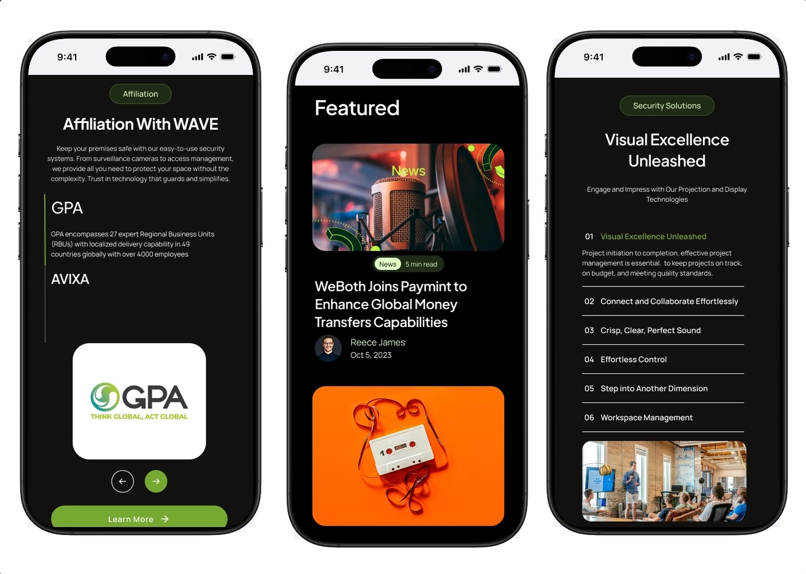
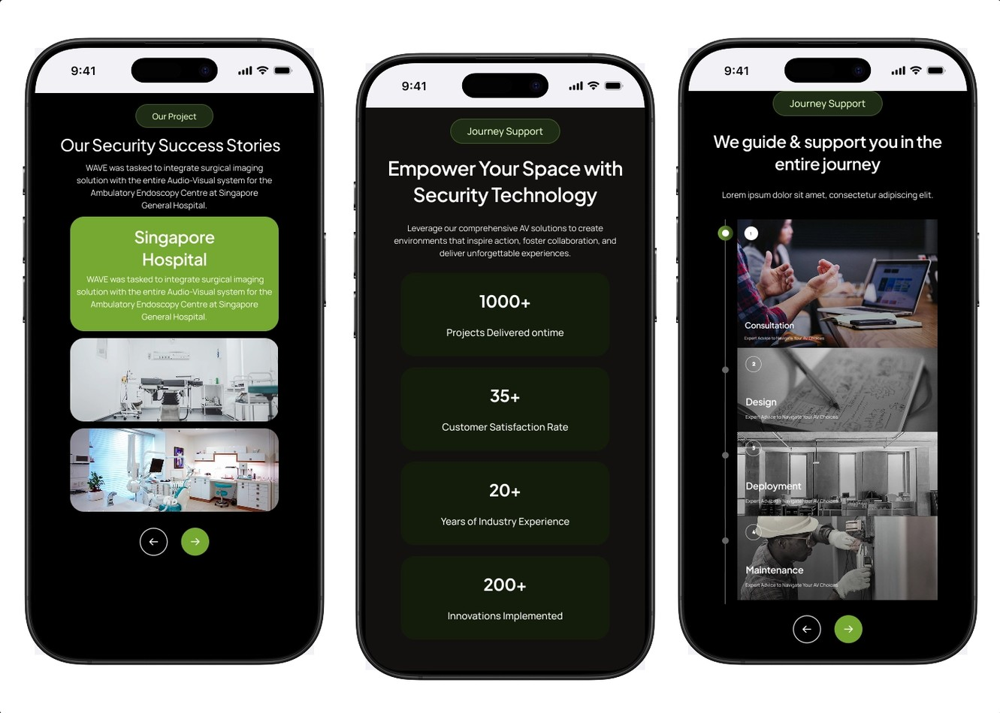

Internship case study
Reduced Support Queries by 40% for an Audio-Visual Tech Brand
Timeline: Mar 2024 – Jun 2024
Client: Audio-Visual Technology Company
Role: Product Designer (Internship), Zensite
Introduction
- Objective: Redesign the website to reduce drop-off rates and improve user navigation.
Problem statement
- Users reported difficulty navigating the website
- High drop-off rates affecting conversions
- Poor user engagement and retention
- Navigation complexity creating user frustration
Research
Competitive analysis
- Analyzed industry-leading AV technology websites
- Identified navigation best practices
- Documented successful user flow patterns
User research
- Conducted user interviews about navigation pain points
- Analyzed user behavior and interaction data
- Gathered feedback on current website performance
Key findings
- Complex menu structures confusing users
- Inconsistent labeling and categorization
- Lack of clear visual hierarchy
- Users expect simplified, industry-standard navigation
Solution
Navigation restructuring
- Simplified menu architecture based on user mental models
- Created logical content groupings
- Implemented consistent labeling system
- Established clear visual hierarchy

Restructured screens with simplified navigation and clearer content groupings.
User experience improvements
- Designed accessible interface elements
- Added strategic interactive components
- Created clear visual pathways for user tasks
- Improved content scanability and readability
Information architecture
- Developed a comprehensive sitemap from research insights
- Organized content by user priorities
- Established logical page relationships

Sitemap and journey-support screens built from the research findings.
Results
User feedback
- Significantly improved navigation experience
- Reduced time-to-task completion
- Higher user satisfaction scores
Stakeholder response
- Positive reception of visual hierarchy improvements
- Approval of enhanced aesthetic and functionality
- Strong support for user-centered design approach
Deliverables
- Wireframes: Complete set for all key pages
- Interactive prototypes: Clickable navigation flows
- Design system: Component library and style guide
- User flow documentation: Optimized user journey maps
- Sitemap: Comprehensive information architecture
Working through the redesign with the team at Zensite.